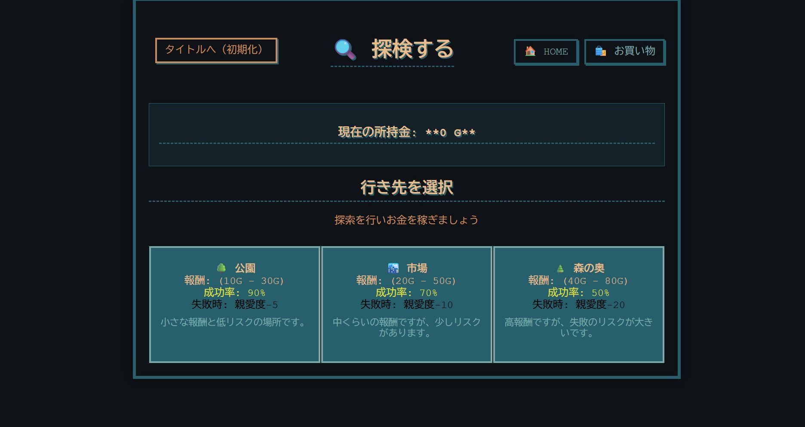
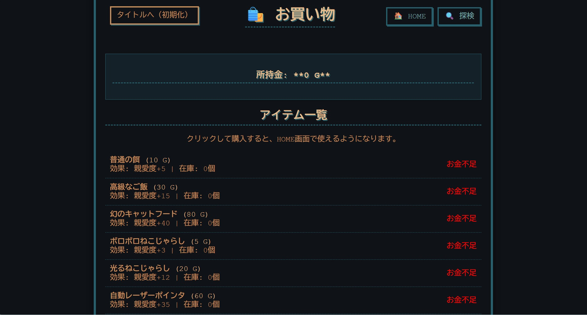

「のらねこ」は、PHPのセッション管理機能をベースに開発した、Webブラウザ上で動作するテキスト型の猫育成シミュレーションゲームです。
プレイヤーの選択肢によって状態がリアルタイムに分岐し、限られたターンの中で猫と接するかを体験する仕組みになっています。
本作のバックエンドは、PHPを用いて実装しています。ページを遷移したり、コマンドを選択してリロードしたりしても、ねこの「満腹度」「親愛度」「経過日数」といったステータスが消えずに保持され続けるよう、サーバー側でのセッション管理を構築しました。
また、プログラムが予期せぬ挙動を起こさないよう、開発環境（XAMPP）を用いて入念なデバッグを繰り返しながら、ロジックの正確性を突き詰めました。
ゲーム画面は、プレイヤーがステータスや状況を一目で把握できるよう、UI/UXデザインにこだわりました。情報ネットワーク学科での学びを活かし、ただプログラムを動かすだけでなく、「ユーザーが迷わずに心地よく操作できる機能美」を意識したレイアウト設計を行っています。